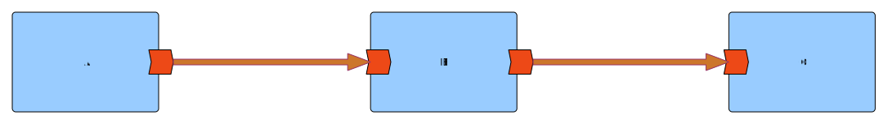
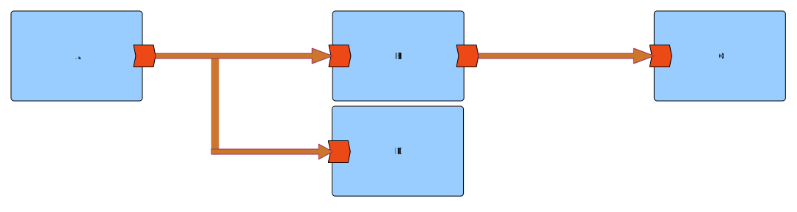
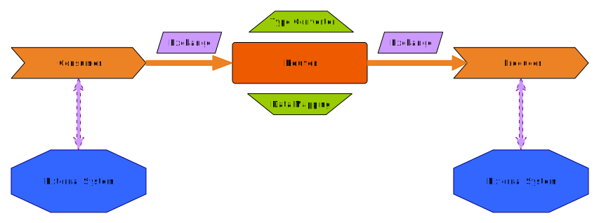
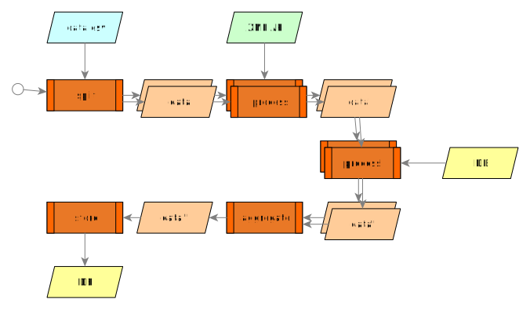

Who am I?
- 19🐱🐱 Crazy Cat Lady
- Free Libre and Open Source Enthusiast
- 2008 Software Engineer
- GeoSpatial world
- 2009 Dijkstra A* Witch
- 2012 Metadata Wrangler
- 2013 OSGeo Charter Member
- 2017-2019 OSGeo President
- 2016 Women in Tech
- Senior Software Engineer at
- 2019 Integration Druid with Apache Camel
- 2020 Apache Software Foundation
- 2021 Lead Kaoto.io
- Java Champion
What do we want?
- FAIR Data (Findable, Accessible, Interoperable and Reusable)
- Reproducible science
How can we (developers) help?
FAIR
Use standard formats
Use standard protocols
Like INSPIRE
Reproducible Science
Hand by hand with FOSS
Need to see and run the code
Not all scientists are developers
The less code, the better





//Start with a timer that executes the operation every 10 seconds
from("timer:java?period=10000")
//Access the CSV file which can be on an api or storage device
.to("{{source.csv}}")
//unmarshal and split the workflow per row
.unmarshal().split(body()).streaming()
//process each row through the following API
.to("https://nominatim.openstreetmap.org/reverse")
//the returned XML is also processed
.unmarshal().jacksonxml()
//Prepare an SQL query based on the result of the process
.setBody().simple("SELECT info FROM descriptions WHERE id like '${exchangeProperty.pollutant}'")
//send the SQL query to the database
.to("jdbc:postgresBean?readSize=1")
//reunite the parallel streams that started on the csv processing
.aggregate(constant(true), aggregationStrategy)
.completionSize(5)
//store the result in another database
.to("mongodb:mongoBean?database=example&collection=mySpatialObjects&operation=insert")
Low Code / No Code Integration Development
Full no code, just drag and drop
Any Questions?
You can find me as @delawen on many platforms.
@delawen@floss.social
The slides are on